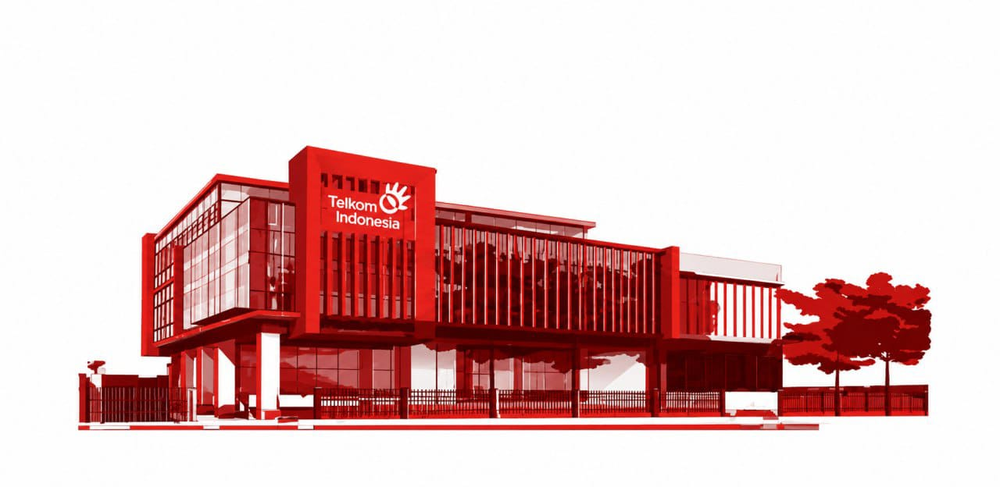

Mendukung konektivitas melalui pembangunan dan pengelolaan infrastruktur jaringan akses broadband yang andal.

Ujung tombak pembangunan dan pengelolaan infrastruktur jaringan broadband fiber optik untuk mendukung konektivitas digital di Kabupaten Sidoarjo.
Menjadi perusahaan penyedia layanan konstruksi dan pengelolaan infrastruktur jaringan akses telekomunikasi terdepan, terpercaya, dan berstandar global di wilayah Sidoarjo dan sekitarnya.
PT Telkom Akses merupakan anak perusahaan PT Telkom Indonesia (Persero) Tbk yang berfokus pada penyediaan layanan konstruksi pembangunan dan pengelolaan infrastruktur jaringan. Kehadiran Branch Sidoarjo berperan strategis dalam mengawal perluasan jaringan akses berbasis fiber optik guna memenuhi kebutuhan konektivitas di kawasan industri, perumahan, dan pusat pemerintahan Kabupaten Sidoarjo.
Kabupaten Sidoarjo & Sekitarnya (Witel Sidoarjo)
Senin – Jumat (08.00 – 17.00 WIB) | Siaga 24/7
Posko Helpdesk Operasional Branch Sidoarjo